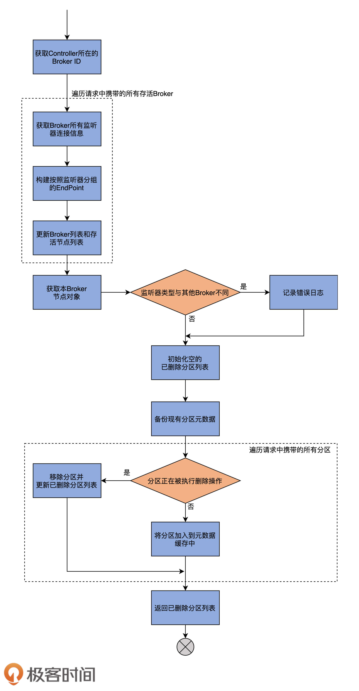
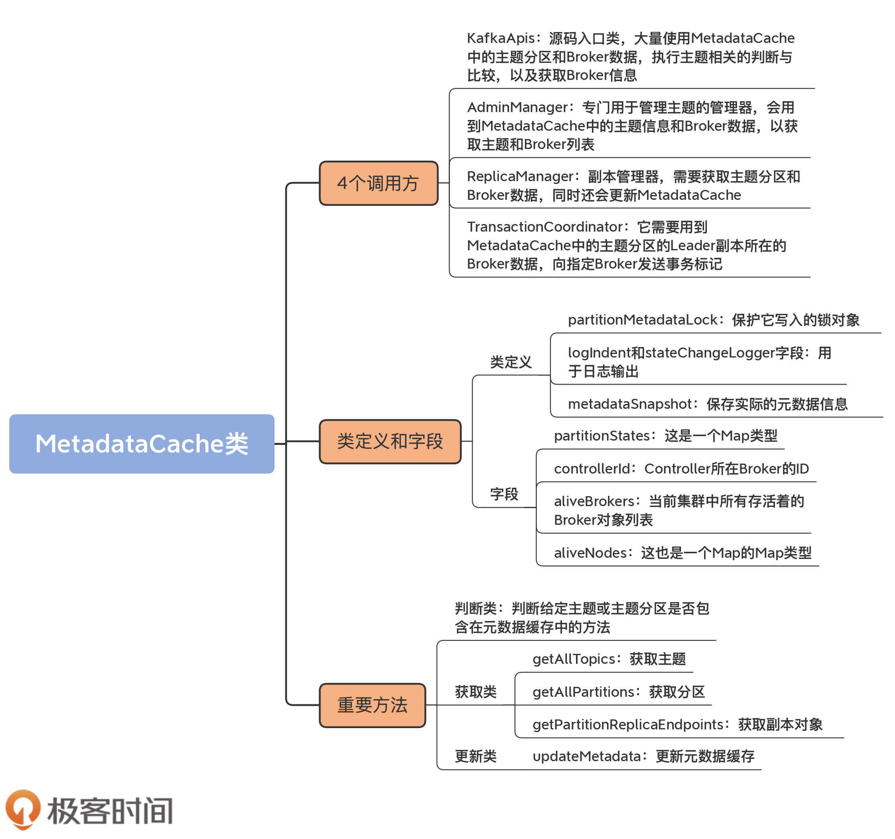

- 00 导读 构建Kafka工程和源码阅读环境、Scala语言热身.md.html
- 00 开篇词 阅读源码，逐渐成了职业进阶道路上的“必选项”.md.html
- 00 重磅加餐 带你快速入门Scala语言.md.html
- 01 日志段：保存消息文件的对象是怎么实现的？.md.html
- 02 日志（上）：日志究竟是如何加载日志段的？.md.html
- 03 日志（下）：彻底搞懂Log对象的常见操作.md.html
- 04 索引（上）：改进的二分查找算法在Kafka索引的应用.md.html
- 05 索引（下）：位移索引和时间戳索引的区别是什么？.md.html
- 06 请求通道：如何实现Kafka请求队列？.md.html
- 07 SocketServer（上）：Kafka到底是怎么应用NIO实现网络通信的？.md.html
- 08 SocketServer（中）：请求还要区分优先级？.md.html
- 09 SocketServer（下）：请求处理全流程源码分析.md.html
- 10 KafkaApis：Kafka最重要的源码入口，没有之一.md.html
- 11 Controller元数据：Controller都保存有哪些东西？有几种状态？.md.html
- 12 ControllerChannelManager：Controller如何管理请求发送？.md.html
- 13 ControllerEventManager：变身单线程后的Controller如何处理事件？.md.html
- 14 Controller选举是怎么实现的？.md.html
- 15 如何理解Controller在Kafka集群中的作用？.md.html
- 16 TopicDeletionManager： Topic是怎么被删除的？.md.html
- 17 ReplicaStateMachine：揭秘副本状态机实现原理.md.html
- 18 PartitionStateMachine：分区状态转换如何实现？.md.html
- 19 TimingWheel：探究Kafka定时器背后的高效时间轮算法.md.html
- 20 DelayedOperation：Broker是怎么延时处理请求的？.md.html
- 21 AbstractFetcherThread：拉取消息分几步？.md.html
- 22 ReplicaFetcherThread：Follower如何拉取Leader消息？.md.html
- 23 ReplicaManager（上）：必须要掌握的副本管理类定义和核心字段.md.html
- 24 ReplicaManager（中）：副本管理器是如何读写副本的？.md.html
- 25 ReplicaManager（下）：副本管理器是如何管理副本的？.md.html
- 26 MetadataCache：Broker是怎么异步更新元数据缓存的？.md.html
- 27 消费者组元数据（上）：消费者组都有哪些元数据？.md.html
- 28 消费者组元数据（下）：Kafka如何管理这些元数据？.md.html
- 29 GroupMetadataManager：组元数据管理器是个什么东西？.md.html
- 30 GroupMetadataManager：位移主题保存的只是位移吗？.md.html
- 31 GroupMetadataManager：查询位移时，不用读取位移主题？.md.html
- 32 GroupCoordinator：在Rebalance中，Coordinator如何处理成员入组？.md.html
- 33 GroupCoordinator：在Rebalance中，如何进行组同步？.md.html
- 特别放送（一）经典的Kafka学习资料有哪些？.md.html
- 特别放送（三）我是怎么度过日常一天的？.md.html
- 特别放送（二）一篇文章带你了解参与开源社区的全部流程.md.html
- 特别放送（五） Kafka 社区的重磅功能：移除 ZooKeeper 依赖.md.html
- 特别放送（四）20道经典的Kafka面试题详解.md.html
- 结束语 源码学习，我们才刚上路呢.md.html
- 捐赠
26 MetadataCache：Broker是怎么异步更新元数据缓存的？
你好，我是胡夕。今天，我们学习Broker上的元数据缓存（MetadataCache）。
你肯定很好奇，前面我们不是学过Controller端的元数据缓存了吗？这里的元数据缓存又是啥呢？其实，这里的MetadataCache是指Broker上的元数据缓存，这些数据是Controller通过UpdateMetadataRequest请求发送给Broker的。换句话说，Controller实现了一个异步更新机制，能够将最新的集群信息广播给所有Broker。
那么，为什么每台Broker上都要保存这份相同的数据呢？这里有两个原因。
第一个，也是最重要的原因，就是保存了这部分数据，Broker就能够及时响应客户端发送的元数据请求，也就是处理Metadata请求。Metadata请求是为数不多的能够被集群任意Broker处理的请求类型之一，也就是说，客户端程序能够随意地向任何一个Broker发送Metadata请求，去获取集群的元数据信息，这完全得益于MetadataCache的存在。
第二个原因是，Kafka的一些重要组件会用到这部分数据。比如副本管理器会使用它来获取Broker的节点信息，事务管理器会使用它来获取分区Leader副本的信息，等等。
总之，MetadataCache是每台Broker上都会保存的数据。Kafka通过异步更新机制来保证所有Broker上的元数据缓存实现最终一致性。
在实际使用的过程中，你可能会碰到这样一种场景：集群明明新创建了主题，但是消费者端却报错说“找不到主题信息”，这种情况通常只持续很短的时间。不知道你是否思考过这里面的原因，其实说白了，很简单，这就是因为元数据是异步同步的，因此，在某一时刻，某些Broker尚未更新元数据，它们保存的数据就是过期的元数据，无法识别最新的主题。
等你今天学完了MetadataCache类，特别是元数据的更新之后，就会彻底明白这个问题了。下面，我们就来学习下MetadataCache的类代码。
MetadataCache类
MetadataCache类位于server包下的同名scala文件中。这是一个不到400行的小文件，里面的代码结构非常简单，该文件只定义了一个类，那就是MetadataCache。
MetadataCache的实例化是在Kafka Broker启动时完成的，具体的调用发生在KafkaServer类的startup方法中。
// KafkaServer.scala
def startup(): Unit = {
try {
......
metadataCache = new MetadataCache(config.brokerId)
......
}
catch {
case e: Throwable =>
......
}
}
一旦实例被成功创建，就会被Kafka的4个组件使用。我来给你解释一下这4个组件的名称，以及它们各自使用该实例的主要目的。
- KafkaApis：这是源码入口类。它是执行Kafka各类请求逻辑的地方。该类大量使用MetadataCache中的主题分区和Broker数据，执行主题相关的判断与比较，以及获取Broker信息。
- AdminManager：这是Kafka定义的专门用于管理主题的管理器，里面定义了很多与主题相关的方法。同KafkaApis类似，它会用到MetadataCache中的主题信息和Broker数据，以获取主题和Broker列表。
- ReplicaManager：这是我们刚刚学过的副本管理器。它需要获取主题分区和Broker数据，同时还会更新MetadataCache。
- TransactionCoordinator：这是管理Kafka事务的协调者组件，它需要用到MetadataCache中的主题分区的Leader副本所在的Broker数据，向指定Broker发送事务标记。
类定义及字段
搞清楚了MetadataCache类被创建的时机以及它的调用方，我们就了解了它的典型使用场景，即作为集群元数据集散地，它保存了集群中关于主题和Broker的所有重要数据。那么，接下来，我们来看下这些数据到底都是什么。
class MetadataCache(brokerId: Int) extends Logging {
private val partitionMetadataLock = new ReentrantReadWriteLock()
@volatile private var metadataSnapshot: MetadataSnapshot = MetadataSnapshot(partitionStates = mutable.AnyRefMap.empty,
controllerId = None, aliveBrokers = mutable.LongMap.empty, aliveNodes = mutable.LongMap.empty)
this.logIdent = s"[MetadataCache brokerId=$brokerId] "
private val stateChangeLogger = new StateChangeLogger(brokerId, inControllerContext = false, None)
......
}
MetadataCache类构造函数只需要一个参数：brokerId，即Broker的ID序号。除了这个参数，该类还定义了4个字段。
partitionMetadataLock字段是保护它写入的锁对象，logIndent和stateChangeLogger字段仅仅用于日志输出，而metadataSnapshot字段保存了实际的元数据信息，它是MetadataCache类中最重要的字段，我们要重点关注一下它。
该字段的类型是MetadataSnapshot类，该类是MetadataCache中定义的一个嵌套类。以下是该嵌套类的源码：
case class MetadataSnapshot(partitionStates: mutable.AnyRefMap
[String, mutable.LongMap[UpdateMetadataPartitionState]],
controllerId: Option[Int],
aliveBrokers: mutable.LongMap[Broker],
aliveNodes: mutable.LongMap[collection.Map[ListenerName, Node]])
从源码可知，它是一个case类，相当于Java中配齐了Getter方法的POJO类。同时，它也是一个不可变类（Immutable Class）。正因为它的不可变性，其字段值是不允许修改的，我们只能重新创建一个新的实例，来保存更新后的字段值。
我们看下它的各个字段的含义。
- partitionStates：这是一个Map类型。Key是主题名称，Value又是一个Map类型，其Key是分区号，Value是一个UpdateMetadataPartitionState类型的字段。UpdateMetadataPartitionState类型是UpdateMetadataRequest请求内部所需的数据结构。一会儿我们再说这个类型都有哪些数据。
- controllerId：Controller所在Broker的ID。
- aliveBrokers：当前集群中所有存活着的Broker对象列表。
- aliveNodes：这也是一个Map的Map类型。其Key是Broker ID序号，Value是Map类型，其Key是ListenerName，即Broker监听器类型，而Value是Broker节点对象。
现在，我们说说UpdateMetadataPartitionState类型。这个类型的源码是由Kafka工程自动生成的。UpdateMetadataRequest请求所需的字段用JSON格式表示，由Kafka的generator工程负责为JSON格式自动生成对应的Java文件，生成的类是一个POJO类，其定义如下：
static public class UpdateMetadataPartitionState implements Message {
private String topicName; // 主题名称
private int partitionIndex; // 分区号
private int controllerEpoch; // Controller Epoch值
private int leader; // Leader副本所在Broker ID
private int leaderEpoch; // Leader Epoch值
private List<Integer> isr; // ISR列表
private int zkVersion; // ZooKeeper节点Stat统计信息中的版本号
private List<Integer> replicas; // 副本列表
private List<Integer> offlineReplicas; // 离线副本列表
private List<RawTaggedField> _unknownTaggedFields; // 未知字段列表
......
}
可以看到，UpdateMetadataPartitionState类的字段信息非常丰富，它包含了一个主题分区非常详尽的数据，从主题名称、分区号、Leader副本、ISR列表到Controller Epoch、ZooKeeper版本号等信息，一应俱全。从宏观角度来看，Kafka集群元数据由主题数据和Broker数据两部分构成。所以，可以这么说，MetadataCache中的这个字段撑起了元数据缓存的“一半天空”。
重要方法
接下来，我们学习下MetadataCache类的重要方法。你需要记住的是，这个类最重要的方法就是操作metadataSnapshot字段的方法，毕竟，所谓的元数据缓存，就是指MetadataSnapshot类中承载的东西。
我把MetadataCache类的方法大致分为三大类：
- 判断类；
- 获取类；
- 更新类。
这三大类方法是由浅入深的关系，我们先从简单的判断类方法开始。
判断类方法
所谓的判断类方法，就是判断给定主题或主题分区是否包含在元数据缓存中的方法。MetadataCache类提供了两个判断类的方法，方法名都是contains，只是输入参数不同。
// 判断给定主题是否包含在元数据缓存中
def contains(topic: String): Boolean = {
metadataSnapshot.partitionStates.contains(topic)
}
// 判断给定主题分区是否包含在元数据缓存中
def contains(tp: TopicPartition): Boolean = getPartitionInfo(tp.topic, tp.partition).isDefined
// 获取给定主题分区的详细数据信息。如果没有找到对应记录，返回None
def getPartitionInfo(topic: String,
partitionId: Int): Option[UpdateMetadataPartitionState] = {
metadataSnapshot.partitionStates.get(topic)
.flatMap(_.get(partitionId))
}
第一个contains方法用于判断给定主题是否包含在元数据缓存中，比较简单，只需要判断metadataSnapshot中partitionStates的所有Key是否包含指定主题就行了。
第二个contains方法相对复杂一点。它首先要从metadataSnapshot中获取指定主题分区的分区数据信息，然后根据分区数据是否存在，来判断给定主题分区是否包含在元数据缓存中。
判断类的方法实现都很简单，代码也不多，很好理解，我就不多说了。接下来，我们来看获取类方法。
获取类方法
MetadataCache类的getXXX方法非常多，其中，比较有代表性的是getAllTopics方法、getAllPartitions方法和getPartitionReplicaEndpoints，它们分别是获取主题、分区和副本对象的方法。在我看来，这是最基础的元数据获取方法了，非常值得我们学习。
首先，我们来看入门级的get方法，即getAllTopics方法。该方法返回当前集群元数据缓存中的所有主题。代码如下：
private def getAllTopics(snapshot: MetadataSnapshot): Set[String] = {
snapshot.partitionStates.keySet
}
它仅仅是返回MetadataSnapshot数据类型中partitionStates字段的所有Key字段。前面说过，partitionStates是一个Map类型，Key就是主题。怎么样，简单吧？
如果我们要获取元数据缓存中的分区对象，该怎么写呢？来看看getAllPartitions方法的实现。
def getAllPartitions(): Set[TopicPartition] = {
metadataSnapshot.partitionStates.flatMap { case (topicName, partitionsAndStates) =>
partitionsAndStates.keys.map(partitionId => new TopicPartition(topicName, partitionId.toInt))
}.toSet
}
和getAllTopics方法类似，它的主要思想也是遍历partitionStates，取出分区号后，构建TopicPartition实例，并加入到返回集合中返回。
最后，我们看一个相对复杂一点的get方法：getPartitionReplicaEndpoints。
def getPartitionReplicaEndpoints(tp: TopicPartition, listenerName: ListenerName): Map[Int, Node] = {
// 使用局部变量获取当前元数据缓存
val snapshot = metadataSnapshot
// 获取给定主题分区的数据
snapshot.partitionStates.get(tp.topic).flatMap(_.get(tp.partition))
.map { partitionInfo =>
// 拿到副本Id列表
val replicaIds = partitionInfo.replicas
replicaIds.asScala
.map(replicaId => replicaId.intValue() -> {
// 获取副本所在的Broker Id
snapshot.aliveBrokers.get(replicaId.longValue()) match {
case Some(broker) =>
// 根据Broker Id去获取对应的Broker节点对象
broker.getNode(listenerName).getOrElse(Node.noNode())
case None => // 如果找不到节点
Node.noNode()
}}).toMap
.filter(pair => pair match {
case (_, node) => !node.isEmpty
})
}.getOrElse(Map.empty[Int, Node])
}
这个getPartitionReplicaEndpoints方法接收主题分区和ListenerName，以获取指定监听器类型下该主题分区所有副本的Broker节点对象，并按照Broker ID进行分组。
首先，代码使用局部变量获取当前的元数据缓存。这样做的好处在于，不需要使用锁技术，但是，就像我开头说过的，这里有一个可能的问题是，读到的数据可能是过期的数据。不过，好在Kafka能够自行处理过期元数据的问题。当客户端因为拿到过期元数据而向Broker发出错误的指令时，Broker会显式地通知客户端错误原因。客户端接收到错误后，会尝试再次拉取最新的元数据。这个过程能够保证，客户端最终可以取得最新的元数据信息。总体而言，过期元数据的不良影响是存在的，但在实际场景中并不是太严重。
拿到主题分区数据之后，代码会获取副本ID列表，接着遍历该列表，依次获取每个副本所在的Broker ID，再根据这个Broker ID去获取对应的Broker节点对象。最后，将这些节点对象封装到返回结果中并返回。
更新类方法
下面，我们进入到今天的“重头戏”：Broker端元数据缓存的更新方法。说它是重头戏，有两个原因：
- 跟前两类方法相比，它的代码实现要复杂得多，因此，我们需要花更多的时间去学习；
- 元数据缓存只有被更新了，才能被读取。从某种程度上说，它是后续所有getXXX方法的前提条件。
源码中实现更新的方法只有一个：updateMetadata方法。该方法的代码比较长，我先画一张流程图，帮助你理解它做了什么事情。

updateMetadata方法的主要逻辑，就是读取UpdateMetadataRequest请求中的分区数据，然后更新本地元数据缓存。接下来，我们详细地学习一下它的实现逻辑。
为了方便你掌握，我将该方法分成几个部分来讲，首先来看第一部分代码：
def updateMetadata(correlationId: Int, updateMetadataRequest: UpdateMetadataRequest): Seq[TopicPartition] = {
inWriteLock(partitionMetadataLock) {
// 保存存活Broker对象。Key是Broker ID，Value是Broker对象
val aliveBrokers = new mutable.LongMap[Broker](metadataSnapshot.aliveBrokers.size)
// 保存存活节点对象。Key是Broker ID，Value是监听器->节点对象
val aliveNodes = new mutable.LongMap[collection.Map[ListenerName, Node]](metadataSnapshot.aliveNodes.size)
// 从UpdateMetadataRequest中获取Controller所在的Broker ID
// 如果当前没有Controller，赋值为None
val controllerIdOpt = updateMetadataRequest.controllerId match {
case id if id < 0 => None
case id => Some(id)
}
// 遍历UpdateMetadataRequest请求中的所有存活Broker对象
updateMetadataRequest.liveBrokers.forEach { broker =>
val nodes = new java.util.HashMap[ListenerName, Node]
val endPoints = new mutable.ArrayBuffer[EndPoint]
// 遍历它的所有EndPoint类型，也就是为Broker配置的监听器
broker.endpoints.forEach { ep =>
val listenerName = new ListenerName(ep.listener)
endPoints += new EndPoint(ep.host, ep.port, listenerName, SecurityProtocol.forId(ep.securityProtocol))
// 将<监听器，Broker节点对象>对保存起来
nodes.put(listenerName, new Node(broker.id, ep.host, ep.port))
}
// 将Broker加入到存活Broker对象集合
aliveBrokers(broker.id) = Broker(broker.id, endPoints, Option(broker.rack))
// 将Broker节点加入到存活节点对象集合
aliveNodes(broker.id) = nodes.asScala
}
......
}
}
这部分代码的主要作用是给后面的操作准备数据，即aliveBrokers和aliveNodes两个字段中保存的数据。
因此，首先，代码会创建这两个字段，分别保存存活Broker对象和存活节点对象。aliveBrokers的Key类型是Broker ID，而Value类型是Broker对象；aliveNodes的Key类型也是Broker ID，Value类型是<监听器，节点对象>对。
然后，该方法从UpdateMetadataRequest中获取Controller所在的Broker ID，并赋值给controllerIdOpt字段。如果集群没有Controller，则赋值该字段为None。
接着，代码会遍历UpdateMetadataRequest请求中的所有存活Broker对象。取出它配置的所有EndPoint类型，也就是Broker配置的所有监听器。
最后，代码会遍历它配置的监听器，并将<监听器，Broker节点对象>对保存起来，再将Broker加入到存活Broker对象集合和存活节点对象集合。至此，第一部分代码逻辑完成。
再来看第二部分的代码。这一部分的主要工作是确保集群Broker配置了相同的监听器，同时初始化已删除分区数组对象，等待下一部分代码逻辑对它进行操作。代码如下：
// 使用上一部分中的存活Broker节点对象，
// 获取当前Broker所有的<监听器,节点>对
aliveNodes.get(brokerId).foreach { listenerMap =>
val listeners = listenerMap.keySet
// 如果发现当前Broker配置的监听器与其他Broker有不同之处，记录错误日志
if (!aliveNodes.values.forall(_.keySet == listeners))
error(s"Listeners are not identical across brokers: $aliveNodes")
}
// 构造已删除分区数组，将其作为方法返回结果
val deletedPartitions = new mutable.ArrayBuffer[TopicPartition]
// UpdateMetadataRequest请求没有携带任何分区信息
if (!updateMetadataRequest.partitionStates.iterator.hasNext) {
// 构造新的MetadataSnapshot对象，使用之前的分区信息和新的Broker列表信息
metadataSnapshot = MetadataSnapshot(metadataSnapshot.partitionStates, controllerIdOpt, aliveBrokers, aliveNodes)
// 否则，进入到方法最后一部分
} else {
......
}
这部分代码首先使用上一部分中的存活Broker节点对象，获取当前Broker所有的<监听器,节点>对。
之后，拿到为当前Broker配置的所有监听器。如果发现配置的监听器与其他Broker有不同之处，则记录一条错误日志。
接下来，代码会构造一个已删除分区数组，将其作为方法返回结果。然后判断UpdateMetadataRequest请求是否携带了任何分区信息，如果没有，则构造一个新的MetadataSnapshot对象，使用之前的分区信息和新的Broker列表信息；如果有，代码进入到该方法的最后一个部分。
最后一部分全部位于上面代码中的else分支上。这部分的主要工作是提取UpdateMetadataRequest请求中的数据，然后填充元数据缓存。代码如下：
val partitionStates = new mutable.AnyRefMap[String, mutable.LongMap[UpdateMetadataPartitionState]](metadataSnapshot.partitionStates.size)
// 备份现有元数据缓存中的分区数据
metadataSnapshot.partitionStates.foreach { case (topic, oldPartitionStates) =>
val copy = new mutable.LongMap[UpdateMetadataPartitionState](oldPartitionStates.size)
copy ++= oldPartitionStates
partitionStates(topic) = copy
}
val traceEnabled = stateChangeLogger.isTraceEnabled
val controllerId = updateMetadataRequest.controllerId
val controllerEpoch = updateMetadataRequest.controllerEpoch
// 获取UpdateMetadataRequest请求中携带的所有分区数据
val newStates = updateMetadataRequest.partitionStates.asScala
// 遍历分区数据
newStates.foreach { state =>
val tp = new TopicPartition(state.topicName, state.partitionIndex)
// 如果分区处于被删除过程中
if (state.leader == LeaderAndIsr.LeaderDuringDelete) {
// 将分区从元数据缓存中移除
removePartitionInfo(partitionStates, tp.topic, tp.partition)
if (traceEnabled)
stateChangeLogger.trace(s"Deleted partition $tp from metadata cache in response to UpdateMetadata " +
s"request sent by controller $controllerId epoch $controllerEpoch with correlation id $correlationId")
// 将分区加入到返回结果数据
deletedPartitions += tp
} else {
// 将分区加入到元数据缓存
addOrUpdatePartitionInfo(partitionStates, tp.topic, tp.partition, state)
if (traceEnabled)
stateChangeLogger.trace(s"Cached leader info $state for partition $tp in response to " +
s"UpdateMetadata request sent by controller $controllerId epoch $controllerEpoch with correlation id $correlationId")
}
}
val cachedPartitionsCount = newStates.size - deletedPartitions.size
stateChangeLogger.info(s"Add $cachedPartitionsCount partitions and deleted ${deletedPartitions.size} partitions from metadata cache " +
s"in response to UpdateMetadata request sent by controller $controllerId epoch $controllerEpoch with correlation id $correlationId")
// 使用更新过的分区元数据，和第一部分计算的存活Broker列表及节点列表，构建最新的元数据缓存
metadataSnapshot =
MetadataSnapshot(partitionStates, controllerIdOpt, aliveBrokers, aliveNodes)
// 返回已删除分区列表数组
deletedPartitions
首先，该方法会备份现有元数据缓存中的分区数据到partitionStates的局部变量中。
之后，获取UpdateMetadataRequest请求中携带的所有分区数据，并遍历每个分区数据。如果发现分区处于被删除的过程中，就将分区从元数据缓存中移除，并把分区加入到已删除分区数组中。否则的话，代码就将分区加入到元数据缓存中。
最后，方法使用更新过的分区元数据，和第一部分计算的存活Broker列表及节点列表，构建最新的元数据缓存，然后返回已删除分区列表数组。至此，updateMetadata方法结束。
总结
今天，我们学习了Broker端的MetadataCache类，即所谓的元数据缓存类。该类保存了当前集群上的主题分区详细数据和Broker数据。每台Broker都维护了一个MetadataCache实例。Controller通过给Broker发送UpdateMetadataRequest请求的方式，来异步更新这部分缓存数据。
我们来回顾下这节课的重点。
- MetadataCache类：Broker元数据缓存类，保存了分区详细数据和Broker节点数据。
- 四大调用方：分别是ReplicaManager、KafkaApis、TransactionCoordinator和AdminManager。
- updateMetadata方法：Controller给Broker发送UpdateMetadataRequest请求时，触发更新。

最后，我想和你讨论一个话题。
有人认为，Kafka Broker是无状态的。学完了今天的内容，现在你应该知道了，Broker并非是无状态的节点，它需要从Controller端异步更新保存集群的元数据信息。由于Kafka采用的是Leader/Follower模式，跟多Leader架构和无Leader架构相比，这种分布式架构的一致性是最容易保证的，因此，Broker间元数据的最终一致性是有保证的。不过，就像我前面说过的，你需要处理Follower滞后或数据过期的问题。需要注意的是，这里的Leader其实是指Controller，而Follower是指普通的Broker节点。
总之，这一路学到现在，不知道你有没有这样的感受，很多分布式架构设计的问题与方案是相通的。比如，在应对数据备份这个问题上，元数据缓存和Kafka副本其实都是相同的设计思路，即使用单Leader的架构，令Leader对外提供服务，Follower只是被动地同步Leader上的数据。
每次学到新的内容之后，希望你不要把它们当作单一的知识看待，要善于进行思考和总结，做到融会贯通。源码学习固然重要，但能让学习源码引领我们升级架构思想，其实是更难得的收获！
课后讨论
前面说到，Controller发送UpdateMetadataRequest请求给Broker时，会更新MetadataCache，你能在源码中找到更新元数据缓存的完整调用路径吗？
欢迎在留言区写下你的思考和答案，跟我交流讨论，也欢迎你把今天的内容分享给你的朋友。
© 2019 - 2023 Liangliang Lee. Powered by gin and hexo-theme-book.